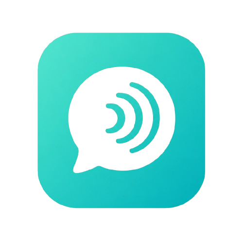

All Projects & Apps
Everything we’ve built and everything we’re building — tools, entertainment, and experiments designed to make life better.

Echo
Category: Communication
What it does: Echo is designed to make staying connected effortless — messaging, voice presence, and lightweight group tools that prioritize clarity and simplicity.
Status: In development
Dayline
Category: Productivity
What it does: Dayline helps you plan your day with clarity — timelines, focus sessions, and simple workflows to get work done without overwhelm.
Status: Active development
Entertainment & Creative Projects
We create short animations, pilot episodes, and experimental storytelling that reflect the studio’s youthful voice. Future releases will be announced on the blog.
Other Experiments
- Prototype multiplayer games and social experiments
- Utility web apps and micro-services
- Hardware experiments and repair tools